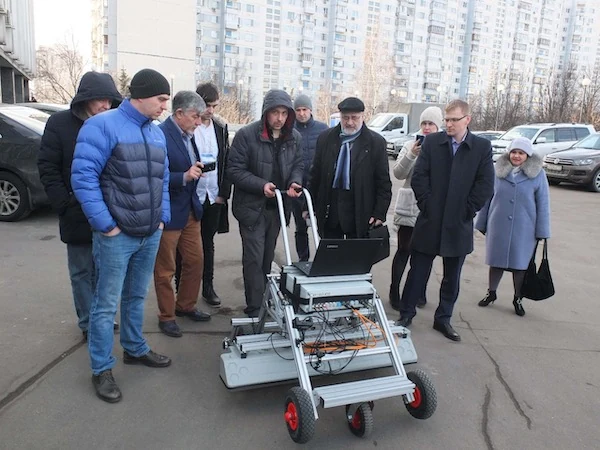
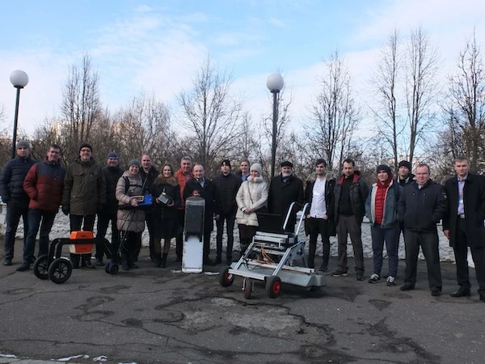
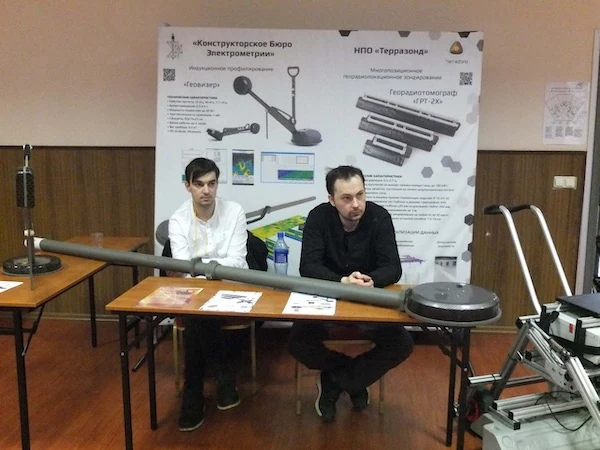

15 марта завершилась научно-практическая конференция «ГЕОРАДАР-2019» на которой были представлены разработки КБ “Электрометрии” в области индукционного профилирования. Аппаратура “АЭМП-14” и “Геовизер” активно внедряется, как дополнительный метод при комплексировании данных георадиолокации в области диагностики и мониторинга состояния подземного пространства на глубину до 5м.
Международная научно-практическая конференция «ГЕОРАДАР-2019» – это продолжение проходивших в 2000-х годах в Московском государственном университете имени М.В.Ломоносова конференций по георадиолокации.
Основные цели проведения конференции:
- Создание площадки для предложения и поиска аппаратурно-методических решений, готовых к внедрению в геологоразведку, инженерные изыскания, в учебные процессы учебных заведений.
- Ликвидация «вакуума» между производителями георадаров, методическими, научными центрами и конечными потребителями оборудования и технологий.
- Продвижение и пропаганда георадарных технологий во все возможные отрасли деятельности человека.
- Повышение имиджа терминов «Георадар» и «Георадиолокация» в бизнес-среде и на рынке геофизических услуг в условиях экономического кризиса и дискредитации метода.
- Вынесение на обсуждение проблем внедрения георадиолокации в инженерно-геологические изыскания.
- Повышение уровня квалификации практикующих специалистов в области георадиолокации и молодых специалистов, незнакомых с этой тематикой.
- Продвижение на рынок передового георадарного оборудования с уникальными высокотехнологичными свойствами.
- Борьба с «шаманством» в георадиолокации.
- Установление деловых контактов и обмен опытом.
- Привлечение новых заказчиков на георадарные изыскания.



Официальная программа конференции «ГЕОРАДАР» включает в себя выставку геофизической аппаратуры и программного обеспечения, доклады, полевую демонстрацию современных георадаров и программного обеспечения, круглый стол. В течение двух дней на мероприятии будет обсуждаться более 20 вопросов применения герадаров, будут подняты вопросы обработки и интерпретации данных георадиолокационных исследований. Планируется обсуждение актуальных проблем и перспектив формирования отечественных георадарных технологий и возможностей увеличения прибыли государственных и частных предприятий с внедрением георадиолокации.
Организаторы конференции – проект «Радарные и Сейсмические Системы» и Геологический факультет МГУ имени М.В.Ломоносова.
Спонсор конференции «ГЕОРАДАР-2019» – НПО «Терразонд»